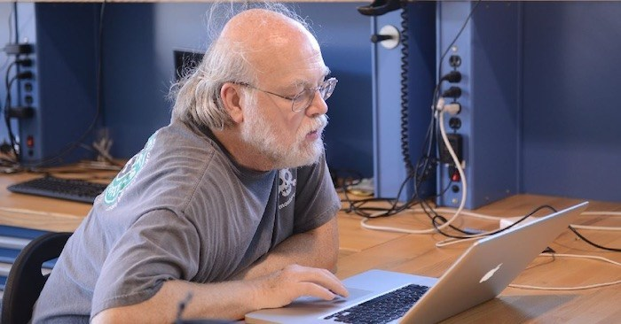

Интересные факты
- Джеймс Гослинг создал Java после прочтения книги Уильяма Вульфа «Дизайн оптимизирующего компилятора». Гослинг описывает ее как первую книгу по компьютерной науке, из тех, что он читал, которая меньше была ориентирована на математику и больше на разработку кода.
- Гослинг обладатель диплома бакалавра в области компьютерных наук, а также магистр и доктор философии в Университете Карнеги-Меллона
- Гослинг начал писать программное обеспечение с подросткового возраста. Он даже рылся в мусорном баке за пределами компьютерной лаборатории Университета Калгари, чтобы добыть скудные вычислительные ресурсы, которые были списаны за ненадобностью. Будучи в старшей школе, Джеймс Гослинг написал программу для физического факультета своего университета, которая была предназначена для приема телеметрических данных со спутника Isis 2 на канадской космической программе.
- Java-программисты во всем мире останавливают Гослинга на улице, чтобы поблагодарить его за свою карьеру  Дата:26.09.2024
Источник: Кто создал Java: главное про Джеймса Гослинга